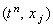
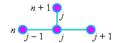
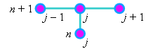

|
3.2. Понятие разностной схемы
Рассмотрим производные в уравнении (2.13) в точке
 на разностной сетке.
Для аппроксимации производной функции u по времени будем использовать правую
конечную разность, стабилизируя при этом значение независимой переменной х в точке с
порядковым номером j:
Для аппроксимации второй производной функции u
по координате будем использовать разностный оператор (2.12), стабилизируя при этом значение
независимой переменной t в точке с порядковым номером n (или, иначе говоря, на n-ом шаге):
Если подставить записанные конечные разности в исходное дифференциальное уравнение (2.13),
получим соотношение, аппроксимирующее это дифференциальное уравнение в точке
на разностной сетке, и называемое разностной схемой:
В записанной разностной схеме (2.14) аппроксимация
второй производной функции u по координате рассматривается на n-ом
шаге по времени, то есть относительно точки tn , для которой
рассматривается аппроксимация всего уравнения. Такая разностная схема называется явной.
Однако аппроксимацию второй производной функции u
по координате можно рассматривать и на (n + 1)-ом шаге по времени, в точке tn+1;
такая разностная схема называется неявной:
Отметим, что если в состав свободного члена входит сама функция u, то её значение
должно соответствовать n-му шагу по времени при составлении явной разностной
схемы и (n + 1)-му шагу по времени при составлении неявной разностной схемы.
Значение же переменной t, входящей в состав свободного члена, всегда берётся на n-ом шаге.
Схематическое изображение узлов разностной сетки,
связанных уравнением разностной схемы, называют разностным шаблоном. Разностный шаблон
может служить хорошим ориентиром при выборе метода решения разностной схемы и составлении
алгоритма решения. Разностные шаблоны для разностных схем (2.14) и (2.15) имеют вид:
| для явной разностной схемы |
для неявной разностной схемы |
|  |
 |
В дальнейшем мы неоднократно будем сопоставлять возможности и методы решения явных и неявных разностных схем для дифференциальных уравнений различного типа.
|